Converters: Comparators, DACs, and ADCs
Instruments 3.2
Imron Rosyadi
Learning Objectives
By the end of this session, you should be able to:
- Explain how comparators form the “front end” between analog sensors and digital logic.
- Design simple alarm and hysteresis (Schmitt trigger) circuits with comparators.
- Compute the output of unipolar and bipolar DACs and select resolution (number of bits).
- Compute the digital output of an ADC for a given analog input and reference.
- Compare successive‑approximation and dual‑slope ADCs and predict their conversion time.
- Analyze how conversion time limits the maximum signal frequency and why sample‑and‑hold is needed.
- Describe frequency‑based A/D conversion using counters and V‑to‑F converters.
Big Picture: Why Converters Matter in ECE
- Sensors mostly give analog outputs (voltages/currents).
- Microcontrollers, FPGAs, PLCs work with digital words.
- Actuators often need analog drives (valves, motors, heaters, etc.).
So we need:
- ADC: analog → digital (measurement path)
- DAC: digital → analog (actuation path)
- Comparator: simplest analog/digital boundary (1‑bit ADC)
In process control:
- A temperature/pressure sensor → ADC → controller → DAC → valve / heater.
- Correct converter selection and design determines accuracy, speed, and stability.
3.1 Comparators: Concept
- A comparator outputs a digital 1 or 0 depending on which input voltage is larger.
- Think of it as a one‑bit ADC with a fixed threshold.
Given inputs \(V_a\) and \(V_b\):
- If \(V_a > V_b\) → output = logic 1 (high).
- If \(V_a < V_b\) → output = logic 0 (low).
Common uses:
- Alarm and interlock circuits.
- Zero‑crossing detection (e.g., AC line).
- Building blocks inside ADCs and DACs.
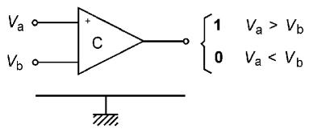
Comparator Alarm Example (Process Control)
Spec: Trigger an alarm if - Temperature \(T > 160^\circ\mathrm{C}\) - AND pressure \(P > 10\ \mathrm{kPa}\)
Transducers:
- Temperature: \(V_T = 2.2\ \mathrm{mV}/^\circ\mathrm{C} \cdot T\)
- Pressure: \(V_P = 0.2\ \mathrm{V}/\mathrm{kPa} \cdot P\)
Compute trip voltages:
- \(V_{T,\text{trip}} = 2.2\ \mathrm{mV}/^\circ\mathrm{C} \times 160^\circ\mathrm{C} = 0.352\ \mathrm{V}\)
- \(V_{P,\text{trip}} = 0.2\ \mathrm{V}/\mathrm{kPa} \times 10\ \mathrm{kPa} = 2.0\ \mathrm{V}\)
Use:
- One comparator for temperature > 0.352 V.
- One comparator for pressure > 2.0 V.
- One AND gate to combine the two alarms.
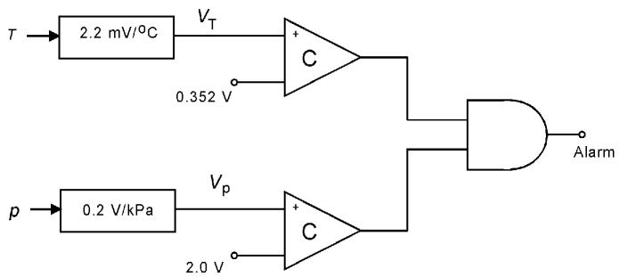
Exercise: Design Your Own Alarm (In‑Class)
You have a level sensor: \(V_L = 40\ \mathrm{mV/cm} \cdot h\), where \(h\) is level in cm.
Requirement:
- Alarm when \(h > 120\ \mathrm{cm}\).
Tasks (think‑pair‑share):
- Compute the trip voltage \(V_{\text{ref}}\).
- Sketch a comparator circuit:
- What goes to
+input? - What goes to
−input?
- What goes to
- How would you invert the condition (alarm when \(h < 120\ \mathrm{cm}\)) without changing the comparator IC?
Open‑Collector Comparator Outputs
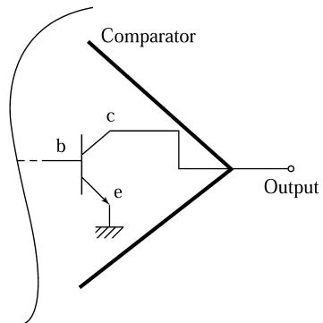
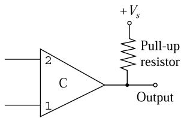
- Some comparators expose only the collector of an internal NPN transistor at the output.
- Need an external pull‑up resistor \(R_{\text{pull}}\) to a supply \(V_s\).
Behavior:
- Transistor ON → output pulled ≈ 0 V → logic 0.
- Transistor OFF → output pulled up to \(V_s\) → logic 1.
Advantages:
- Can use different logic supply than comparator’s internal supply
- e.g., comparator powered at 5 V, but output pulls up to 12 V to drive a relay.
- Can wire‑OR several outputs by tying open collectors together with one pull‑up.
Tip
Open‑collector outputs are very common on comparators and some logic ICs used for interrupt lines, wired‑OR flags, and relays/LED drivers.
Comparator Noise Problem: “Jiggling” Output
Noisy signal near the threshold:
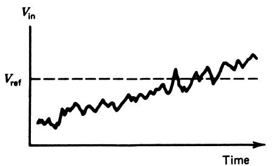
Result:
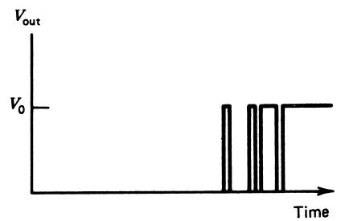
- If the input crosses the reference slowly or has noise, the comparator may rapidly switch between high and low.
- In real systems this can:
- Chatter relays/valves.
- Create multiple interrupts to a microcontroller.
- Generate spurious alarms.
Solution: Hysteresis (Deadband) → The comparator must cross a higher threshold to turn on than to turn off.
Hysteresis Comparator (Schmitt Trigger)
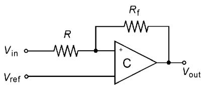
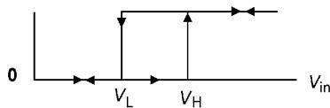
For \(R_f \gg R\):
Output goes high when: \[V_{\text{in}} \ge V_{\text{ref}} = V_H\]
Once high, output will stay high until input falls below: \[V_{\text{in}} \le V_{\text{ref}} - \frac{R}{R_f} V_0 = V_L\]
Hysteresis width (deadband): \[\Delta V = V_H - V_L = \frac{R}{R_f} V_0\]
Hysteresis Design Example (Splashing Tank)
Spec:
- Level sensor: \(V = 20\ \mathrm{mV/cm} \cdot h\)
- Comparator output: high (5 V) whenever level \(h \ge 50\ \mathrm{cm}\)
- Splashing causes \(\pm 3\ \mathrm{cm}\) fluctuation (noise).
Compute:
Nominal reference at 50 cm: \[V_{\text{ref}} = 20\ \mathrm{mV/cm} \times 50\ \mathrm{cm} = 1.0\ \mathrm{V}\]
Splashing amplitude: \[\Delta V_{\text{noise}} = 20\ \mathrm{mV/cm} \times 3\ \mathrm{cm} = \pm 60\ \mathrm{mV}\] Total “noise range” = 120 mV.
Choose hysteresis slightly larger, say \(150\ \mathrm{mV}\).
From \(\Delta V = (R/R_f) V_0\) with \(V_0 = 5\) V: \[(R/R_f)(5\ \mathrm{V}) = 0.150\ \mathrm{V} \Rightarrow R/R_f = 0.03\]
If we pick \(R_f = 100\ \mathrm{k}\Omega\) → \(R = 3\ \mathrm{k}\Omega\).
Use these in the Figure 10 hysteresis comparator with \(V_{\text{ref}} = 1.0\ \mathrm{V}\).
3.2 Digital‑to‑Analog Converters (DACs): Overview
A DAC converts a digital code (binary word) into an analog voltage or current.
- Input: \(n\)‑bit binary word \(b_1 b_2 \dots b_n\) (MSB to LSB).
- Output: a staircase analog voltage (or current) over a defined range.
Two main types in this section:
- Unipolar DAC: output range \(\approx 0\) to \(+V_R\) (or some fraction).
- Bipolar DAC: output range \(\approx -V_R/2\) to \(+V_R/2\).
Uses in ECE:
- Driving actuators (valves, motors, VCOs, etc.) from microcontrollers.
- Setting analog reference levels under software control.
- Generating waveforms, test signals (e.g., arbitrary waveform generators).
Unipolar DAC Transfer Function
For a unipolar \(n\)‑bit DAC with reference voltage \(V_R\):
Binary word \(b_1 b_2 \dots b_n\) with \(b_i \in \{0,1\}\):
\[ V_{\text{out}} = V_R \left[ b_1 2^{-1} + b_2 2^{-2} + \dots + b_n 2^{-n} \right] \tag{5} \]
Interpretation:
- The DAC treats the binary input as a fraction in [0,1).
- Each bit contributes a weighted fraction of \(V_R\).
Maximum output when all bits are 1:
- For \(n=4\): \[V_{\max} = V_R(2^{-1}+2^{-2}+2^{-3}+2^{-4}) = 0.9375 V_R\]
- For \(n=8\): \[V_{\max} = 0.9961 V_R\]
Alternative, easier formula using decimal equivalent \(N\):
\[ V_{\text{out}} = \frac{N}{2^n} V_R \tag{6} \]
where \(N\) is the base‑10 value of the input code.
Example: 8‑bit DAC Output
Given:
- 8‑bit DAC, \(V_R = 5.0\ \mathrm{V}\)
- Input code: \(\mathbf{10100111}_2\) = A7H
Convert input to decimal:
- \(N = 167_{10}\), and \(2^8 = 256\).
Use Equation (6):
\[ V_{\text{out}} = \frac{167}{256} \cdot 5.0 = 3.2617\ \mathrm{V} \]
So the digital word A7H produces ≈ 3.26 V at the DAC output.
Tip
Practice: compute \(V_{\text{out}}\) for input 80H (10000000₂).
- \(N = 128\), \(V_{\text{out}} = (128/256)5 = 2.5\) V.
Example 9: 10‑bit DAC Calculations
Given: 10‑bit DAC, \(V_R = 10.0\ \mathrm{V}\).
- Input: \(\mathbf{0010110101}_2 = \text{0B5H}\)
Use Equation (5): bits at positions 3, 5, 6, 8, 10 are 1:
\[ V_{\text{out}} = 10.0 \left[2^{-3} + 2^{-5} + 2^{-6} + 2^{-8} + 2^{-10}\right] = 10.0 [0.1767578] = 1.767578\ \mathrm{V} \]
- Input: 20FH (hex)
Convert: \(20\mathrm{F}_\mathrm{H} = 527_{10}\), \(2^{10} = 1024\).
From Equation (6):
\[ V_{\text{out}} = \frac{527}{1024} \cdot 10.0 = 5.14648\ \mathrm{V} \]
- What input to get \(6.5\ \mathrm{V}\)?
Solve Equation (6) for \(N\):
\[ N = 2^n \frac{V_{\text{out}}}{V_R} = 1024 \cdot \frac{6.5}{10} = 665.6 \]
\(N\) must be an integer → can’t get exactly 6.5 V.
- \(N=665\) → 299H → 6.494 V
- \(N=666\) → 29AH → 6.504 V
Only way to get exactly 6.5 V is to adjust \(V_R\).
Bipolar DAC: Offset‑Binary
Some DACs output from negative to positive voltage (bipolar).
A common representation is offset‑binary:
\[ V_{\text{out}} = \frac{N}{2^n} V_R - \frac{1}{2} V_R \tag{7} \]
- \(N\) ranges from \(0\) to \((2^n - 1)\).
- When \(N = 0\): \[V_{\text{out}}(\min) = -\frac{V_R}{2}\]
- When \(N = 2^n - 1\): \[V_{\text{out}}(\max) = \frac{1}{2}V_R - \frac{V_R}{2^n}\]
So the output is nearly symmetric about 0 V but slightly less than \(+V_R/2\) at the max code.
Example 10
10‑bit DAC, \(V_R = 5\ \mathrm{V}\)
- 04FH → \(N = 79\) → \[V_{\text{out}} = \frac{79}{1024}\cdot 5 - 2.5 \approx -2.114\ \mathrm{V}\]
- 2A4H → \(N = 676\) → \[V_{\text{out}} \approx \frac{676}{1024}\cdot 5 - 2.5 \approx 0.801\ \mathrm{V}\]
Zero output occurs when Equation (7) = 0 → \(N = 2^{n-1} = 512 = 200\mathrm{H}\).
DAC Resolution
The smallest change in output for a 1‑LSB change in input is:
\[ \Delta V_{\text{out}} = V_R 2^{-n} \tag{8} \]
This is the voltage resolution of the DAC.
Example:
- 5‑bit DAC, \(V_R = 10\ \mathrm{V}\) → \[\Delta V_{\text{out}} = 10 \cdot 2^{-5} = 0.3125\ \mathrm{V}\]
Design question: How many bits to get \(\Delta V \le 0.04\ \mathrm{V}\) with \(V_R = 10\ \mathrm{V}\)?
Solve:
\[ 0.04 = 10 \cdot 2^{-n} \Rightarrow 2^{-n} = 0.004 \Rightarrow n \approx 7.966 \]
So \(n = 8\) bits is sufficient.
Check:
\[ \Delta V_{\text{out}} = 10 \cdot 2^{-8} = 0.03906\ \mathrm{V} < 0.04\ \mathrm{V} \]
DAC Block Diagram & Characteristics
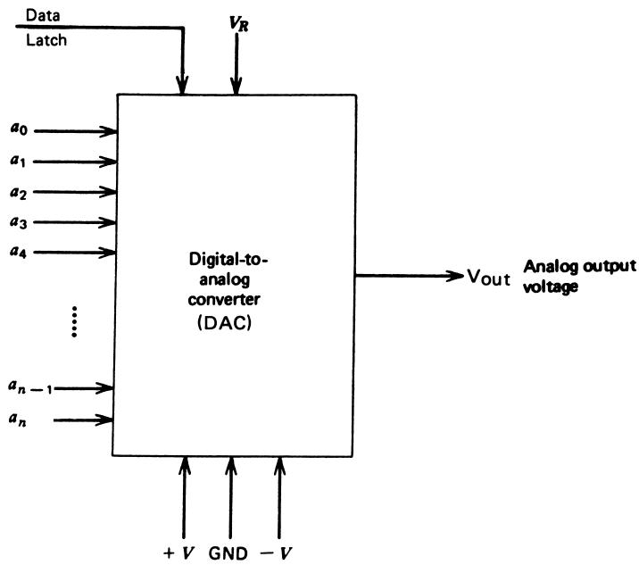
Key characteristics:
- Digital input: typically parallel TTL/CMOS bits.
- Power supply: often ±12..±18 V for internal op‑amps (some single‑supply).
- Reference: defines range and resolution; must be stable & low ripple.
- Output: analog voltage (or current) with step size \(\Delta V_{\text{out}}\).
- Offset & trimming: small non‑zero output at zero code → trim pins.
- Data latch: many DACs latch input on a control signal, holding output constant.
- Conversion time: typically a few µs or less (mostly just amplifier settling).
DAC Internal Structure: R–2R Ladder
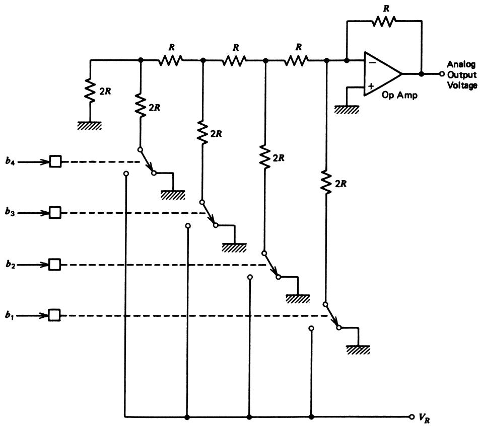
- Uses only two resistor values: \(R\) and \(2R\).
- Each bit controls a switch feeding either reference or ground into the ladder.
- Network analysis shows output matches Equation (5) / (6).
Benefits:
- Easy to fabricate in IC processes (only two precision resistor ratios).
- Good matching → good linearity.
- Scales easily with number of bits.
Example 12: DAC Driving a Control Valve
A valve opens linearly with 0–10 V input. An 8‑bit DAC controls it.
- Find \(V_R\) to get full valve opening at maximum DAC code.
We want:
- For input code 11111111₂ (255₁₀), \(V_{\text{out}} = 10\ \mathrm{V}\).
But with reference \(V_R\), maximum DAC output is:
\[ V_{\max} = V_R \left( \frac{1}{2} + \frac{1}{4} + \dots + \frac{1}{256} \right) = 0.9961 V_R \]
Set equal to 10 V:
\[ 10 = 0.9961 V_R \Rightarrow V_R = \frac{10}{0.9961} \approx 10.039\ \mathrm{V} \]
- Percentage valve change per LSB:
Voltage step:
\[ \Delta V_{\text{out}} = V_R 2^{-8} = 10.039 \cdot \frac{1}{256} = 0.0392\ \mathrm{V} \]
Since 0–10 V is 0–100% opening:
\[ \text{Percent per step} = \frac{0.0392}{10} \times 100\% \approx 0.392\% \]
3.3 Analog‑to‑Digital Converters (ADCs): Transfer Function
ADC is the inverse of DAC:
- Input: analog voltage \(V_{\text{in}}\).
- Output: \(n\)‑bit binary word \(b_1 b_2 \dots b_n\).
Unipolar ADC relationship (reverse of Equation 5):
\[ b_1 2^{-1} + b_2 2^{-2} + \dots + b_n 2^{-n} \;\le\; \frac{V_{\text{in}}}{V_R} \tag{9} \]
Since the left side can only take discrete values spaced by \(2^{-n}\):
- There is an inherent uncertainty of: \[\Delta V = V_R 2^{-n} \tag{10}\]
- Same expression as DAC resolution.
ADC outputs:
- All 0’s if \(V_{\text{in}}\) is in the lowest interval.
- All 1’s if \(V_{\text{in}}\) is in the highest representable range.
Designing ADC Resolution: Example 13
Sensor: temperature with \(V = 0.02\ \mathrm{V}/^\circ\mathrm{C} \cdot T\).
Need to measure from \(0^\circ\mathrm{C}\) to \(100^\circ\mathrm{C}\) with resolution \(0.1^\circ\mathrm{C}\).
Max sensor output at 100°C:
\[ V_{\max} = 0.02 \cdot 100 = 2\ \mathrm{V} \]
So choose \(V_R = 2\ \mathrm{V}\).
Change in sensor voltage for \(0.1^\circ\mathrm{C}\):
\[ \Delta V_{\text{req}} = 0.1^\circ\mathrm{C} \cdot 0.02\ \mathrm{V}/^\circ\mathrm{C} = 2\ \mathrm{mV} \]
We need ADC LSB \(\le 2\ \mathrm{mV}\):
\[ 0.002 = 2 \cdot 2^{-n} \Rightarrow 2^{-n} = 0.001 \Rightarrow n \approx 9.996 \]
So 10 bits are required.
Check actual LSB:
\[ \Delta V = 2 \cdot 2^{-10} = 0.001953\ \mathrm{V} \approx 1.95\ \mathrm{mV} < 2\ \mathrm{mV} \]
Effective temperature range:
- Max code (all 1’s) reached at \(V_R(1 - 2^{-n}) \approx 1.998\ \mathrm{V}\) → \(T \approx 99.9^\circ\mathrm{C}\).
So actual measured range with full 10 bits is about \(0.1^\circ\mathrm{C}\) to \(99.9^\circ\mathrm{C}\).
Direct Formula for ADC Output Code
Instead of Equation (9), we often use:
\[ N = \operatorname{INT}\left(\frac{V_{\text{in}}}{V_R} 2^n\right) \tag{11} \]
- \(N\) = decimal value of digital output.
- \(\operatorname{INT}()\) = truncate fractional part (not rounding).
Then convert \(N\) to hex or binary.
Example 14
5‑bit ADC, \(V_R = 5\ \mathrm{V}\), \(V_{\text{in}} = 3.127\ \mathrm{V}\).
Compute:
\[ N = \operatorname{INT}\left( \frac{3.127}{5} \cdot 2^5 \right) = \operatorname{INT}(20.0128) = 20_{10} \]
- 20₁₀ = 14H = 10100₂.
Same result as using fractional bits.
Example 15: ADC Code & Back‑Conversion
10‑bit ADC, \(V_R = 2.500\ \mathrm{V}\).
(a) Given \(V_{\text{in}} = 1.45\ \mathrm{V}\), find hex output.
\[ N = \operatorname{INT}\left(\frac{1.45}{2.5} 2^{10}\right) = \operatorname{INT}(593.92) = 593_{10} \]
593₁₀ = 251H.
(b) If output is 1B4H, what \(V_{\text{in}}\)?
1B4H = 436₁₀. Invert Equation (11):
\[ V_{\text{in}} = \frac{N}{2^n} V_R = \frac{436}{1024} \cdot 2.5 = 1.06445\ \mathrm{V} \]
But any input in:
\[ [1.06445\ \mathrm{V},\; 1.06445 + \frac{2.5}{1024} = 1.06689\ \mathrm{V}) \]
will quantize to the same code 1B4H.
Note
Every ADC code corresponds to a range of input voltages, not a single unique value.
Bipolar ADC: Offset‑Binary
For bipolar input (e.g., from \(-V_R/2\) to \(+V_R/2\)), offset‑binary ADC uses:
\[ N = \operatorname{INT}\left[ \left(\frac{V_{\text{in}}}{V_R} + \frac{1}{2} \right) 2^n \right] \tag{12} \]
Check key points (example: 8‑bit, \(V_R = 10\ \mathrm{V}\)):
- \(V_{\text{in}} = -5.00\ \mathrm{V}\) → \(N = 0\) (00000000₂).
- \(V_{\text{in}} = 0\) → \(N = 2^{n-1} = 128\) (10000000₂).
- \(V_{\text{in}} = +5.00\ \mathrm{V}\) not fully representable; max code at ~4.961 V.
Bipolar ADC Example (Summary)
8‑bit, \(V_R = 5.00\ \mathrm{V}\).
For \(V_{\text{in}} = -0.85\ \mathrm{V}\):
\[ N = \operatorname{INT}\left[\left(\frac{-0.85}{5} + 0.5\right)256\right] \approx \operatorname{INT}(84.48) = 84_{10} = 54\mathrm{H} = 01010100_2 \]
For \(V_{\text{in}} = +1.5\ \mathrm{V}\):
\[ N \approx \operatorname{INT}(204.8) = 204_{10} = \mathrm{CCH} = 11001100_2 \]
For target output 72H (114₁₀): solve for \(V_{\text{in}}\):
\[ V_{\text{in}} = \frac{N}{2^n} V_R - \frac{V_R}{2} = (114/256)5 - 2.5 \approx -0.2734\ \mathrm{V} \]
Any input between −0.2734 V and −0.2539 V converts to 72H.
ADC Block Diagram & Handshaking
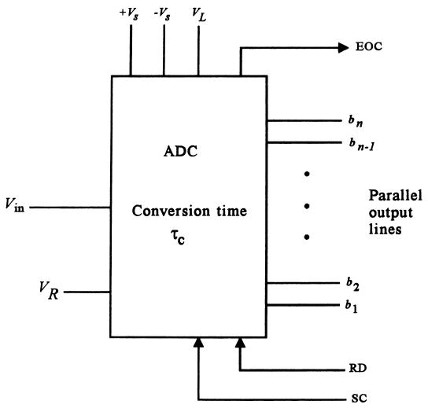
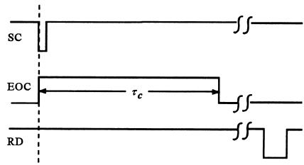
Inputs/outputs:
- Analog input \(V_{\text{in}}\): must be constant during conversion.
- Power supplies: often ± for analog, +5 V for digital.
- Reference \(V_R\): stable, low noise.
- Digital outputs: \(n\) bits, often tri‑state for bus connection.
- Control lines:
- SC (Start‑Convert): input; falling edge starts conversion.
- EOC (End‑Of‑Convert): output; asserts when conversion complete.
- RD (Read): input; enables tri‑state outputs so data appears on bus.
- Conversion time \(τ_c\): finite; microseconds to milliseconds depending on ADC type.
ADC Architectures: Big Picture
Two common internal architectures covered here:
- Parallel‑feedback / Successive Approximation (SAR)
- Uses an internal DAC + comparator.
- Sets bits one by one, MSB → LSB, to approximate \(V_{\text{in}}\).
- Conversion time ~ constant and proportional to number of bits (e.g., 12–20 clock cycles).
- Dual‑Slope (Ramp) ADC
- Integrates input for fixed time, then integrates reference in opposite direction.
- Conversion time longer (tens–hundreds of ms) but very accurate and immune to some noise and component tolerances.
We’ll look at both in more detail.
Successive Approximation (SAR) ADC
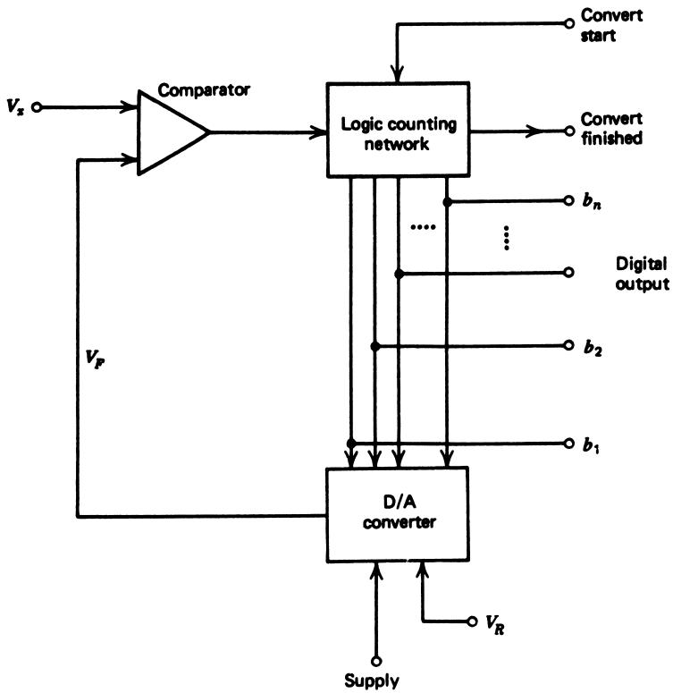
Algorithm (for each conversion):
- Set all bits to 0.
- Set MSB (\(b_1\)) to 1, form trial voltage \(V_F\) via DAC.
- Compare \(V_F\) to \(V_x\) (input).
- If \(V_F \le V_x\), keep MSB = 1.
- Else, reset MSB = 0.
- Move to next bit (\(b_2\)), set to 1, test again.
- Repeat until LSB.
After \(n\) steps, the output word is the converted result.
Example 17: 4‑bit SAR with 5 V Reference
Input: \(V_x = 3.217\ \mathrm{V}\), \(V_R = 5\ \mathrm{V}\).
Steps:
- Trial \(b_1 = 1\) → \(V_F = 5(2^{-1}) = 2.5\ \mathrm{V}\)
- \(V_x > 2.5\) → keep \(b_1 = 1\).
- Trial \(b_2 = 1\) → \(V_F = 5(2^{-1} + 2^{-2}) = 5(0.75) = 3.75\ \mathrm{V}\)
- \(V_x < 3.75\) → reset \(b_2 = 0\).
- Trial \(b_3 = 1\) → \(V_F = 5(2^{-1} + 2^{-3}) = 5(0.625) = 3.125\ \mathrm{V}\)
- \(V_x > 3.125\) → keep \(b_3 = 1\).
- Trial \(b_4 = 1\) → \(V_F = 5(2^{-1} + 2^{-3} + 2^{-4}) = 3.4375\ \mathrm{V}\)
- \(V_x < 3.4375\) → reset \(b_4 = 0\).
Final result: \(b_1 b_2 b_3 b_4 = 1010_2\).
Dual‑Slope ADC
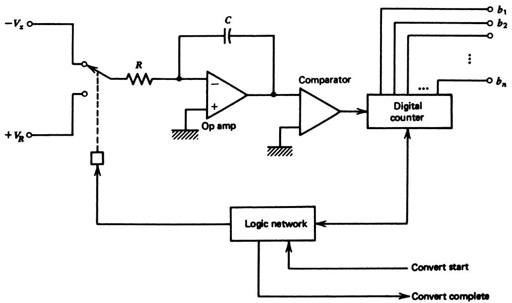
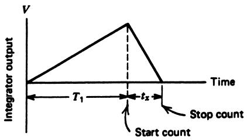
Key idea: integrate input, then integrate reference in opposite direction.
Integrate \(V_x\) for fixed time \(T_1\):
\[ V_1 = \frac{1}{RC} \int_0^{T_1} V_x dt = \frac{T_1}{RC} V_x \tag{14} \]
Switch input to constant reference \(V_R\) (opposite polarity), integrate down:
\[ V_2 = V_1 - \frac{1}{RC}\int_0^{t_x} V_R dt = \frac{T_1}{RC} V_x - \frac{t_x}{RC} V_R \tag{16} \]
Stop when comparator detects \(V_2 = 0\): solve for \(t_x\):
\[ V_x = \frac{t_x}{T_1} V_R \tag{17} \]
A counter counts clock pulses during \(t_x\) → directly proportional to \(V_x\).
Important
Note that \(R\) and \(C\) cancel out in Equation (17). Dual‑slope ADC accuracy depends mainly on reference voltage and timing, not precision of \(R\) and \(C\).
Example 18: Dual‑Slope Conversion Time
Given:
- Dual‑slope ADC as in Figure 16.
- \(R = 100\ \mathrm{k}\Omega\), \(C = 0.01\ \mu \mathrm{F}\)
- \(V_R = 10\ \mathrm{V}\), \(T_1 = 10\ \mathrm{ms}\)
- Input \(V_x = 6.8\ \mathrm{V}\).
Step 1: Compute \(V_1\):
\[ V_1 = \frac{T_1}{RC} V_x = \frac{10\ \mathrm{ms}}{(100\ \mathrm{k}\Omega)(0.01\ \mu \mathrm{F})} \cdot 6.8 = 6.8\ \mathrm{V} \]
(Here, the RC values make the integrator output equal to \(V_x\) after 10 ms.)
Step 2: Compute \(t_x\) using Equation (17):
\[ t_x = \frac{T_1 V_x}{V_R} = \frac{10\ \mathrm{ms} \cdot 6.8}{10} = 6.8\ \mathrm{ms} \]
Total conversion time:
\[ T_{\text{conv}} = T_1 + t_x = 10\ \mathrm{ms} + 6.8\ \mathrm{ms} = 16.8\ \mathrm{ms} \]
Interfacing Sensors to ADCs: Example 19
Sensor: \(V_T = 6.5\ \mathrm{mV}/^\circ\mathrm{C} \cdot T\) up to 100°C.
6‑bit ADC, \(V_R = 10\ \mathrm{V}\).
(a) Design amplifier gain so max code at 100°C.
Sensor output at 100°C:
\[ V_{\text{sensor,max}} = 6.5\ \mathrm{mV/^\circ C} \cdot 100^\circ\mathrm{C} = 0.65\ \mathrm{V} \]
ADC input code 111111₂ → \(V_x\) from Equation (5):
\[ V_x = V_R \left( \frac{1}{2} + \dots + \frac{1}{64} \right) = 10 \cdot 0.984375 = 9.84375\ \mathrm{V} \]
Required amplifier gain:
\[ \text{gain} = \frac{9.84375}{0.65} \approx 15.14 \]
Use op‑amp configuration (Figure 18) to implement this gain.
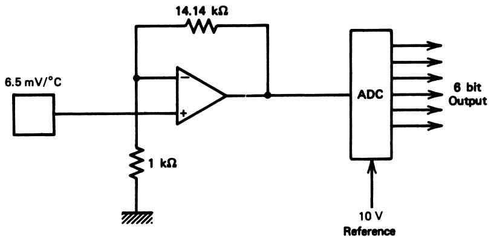
(b) Temperature resolution
ADC LSB:
\[ \Delta V_{\text{ADC}} = V_R 2^{-6} = 10 \cdot 2^{-6} = 0.15625\ \mathrm{V} \]
Sensor equivalent change at input:
\[ \Delta V_T = \frac{0.15625}{15.14} = 0.01032\ \mathrm{V} \]
Convert to temperature:
\[ \Delta T = \frac{0.01032\ \mathrm{V}}{6.5\ \mathrm{mV}/^\circ\mathrm{C}} \approx 1.59^\circ\mathrm{C} \]
Conversion Time vs Input Slew Rate: Limitation
During conversion, ADC repeatedly samples \(V_{\text{in}}\). If \(V_{\text{in}}\) changes too much during this time, the result is invalid.
Condition for no more than 1 LSB change during conversion time \(τ_c\):
\[ \frac{dV_{\text{in}}}{dt} \le \frac{\Delta V}{\tau_c} = \frac{V_R}{2^n \tau_c} \tag{18} \]
Example: 10‑bit ADC, \(V_R = 5\ \mathrm{V}\), \(τ_c = 20\ \mu\mathrm{s}\).
\[ \frac{dV_{\text{in}}}{dt} \le \frac{5}{2^{10} \cdot 20\times 10^{-6}} \approx 244\ \mathrm{V/s} \]
For a sinusoidal input \(V_{\text{in}} = V_0 \sin(\omega t)\),
Max derivative: \(|dV_{\text{in}}/dt|_{\max} = \omega V_0\).
So:
\[ \omega V_0 \le \frac{V_R}{2^n \tau_c} \Rightarrow \omega \le \frac{V_R}{2^n \tau_c V_0} \tag{19} \]
In terms of frequency \(f = \omega/(2\pi)\):
\[ f \le \frac{V_R}{2^{n+1} \pi \tau_c V_0} \tag{20} \]
For full‑scale sinusoid \(V_0 = V_R\):
\[ \omega_{\max} \approx \frac{1}{2^{10} \cdot 20\ \mu\mathrm{s}} \approx 48.8\ \mathrm{rad/s} \Rightarrow f_{\max} \approx 7.8\ \mathrm{Hz} \]
Even though \(τ_c\) = 20 µs seems fast, for 10‑bit accuracy, the max signal frequency is surprisingly low if we require no 1‑LSB change during conversion.
Example 20: Triangular Wave Limit
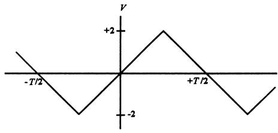
8‑bit bipolar ADC, \(V_R = 5\ \mathrm{V}\), \(τ_c = 12\ \mu\mathrm{s}\).
Input: triangular wave from −1 V to +1 V with period \(T\) (see Figure 19).
Slope of each edge:
- Change = 2 V (from −1 V to +1 V) in \(T/4\): \[ \frac{dV_{\text{in}}}{dt} = \frac{2}{T/4} = \frac{8}{T} = 8f \]
From Equation (18):
\[ 8f \le \frac{5}{2^8 \cdot 12\times10^{-6}} = 1627.6\ \mathrm{V/s} \]
So:
\[ f \le 203.5\ \mathrm{Hz} \]
Above this frequency, the ADC cannot maintain 8‑bit accuracy on this triangular wave without a sample‑and‑hold.
Sample‑and‑Hold (S/H): Concept
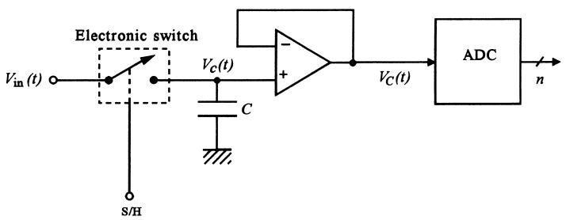
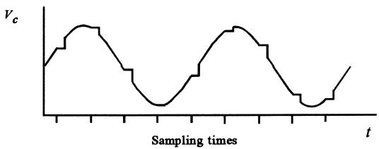
Solution to slew‑rate problem: hold the input constant during conversion.
Operation:
- Sample mode: switch closed, capacitor \(C\) tracks \(V_{\text{in}}(t)\) → \(V_C \approx V_{\text{in}}(t)\).
- At sampling instant \(t_s\): switch opens → Hold mode.
- \(V_C\) “freezes” near \(V_{\text{in}}(t_s)\).
- Buffer (voltage follower) drives ADC input with \(V_C\) while ADC converts.
Practical S/H Circuits and Nonidealities
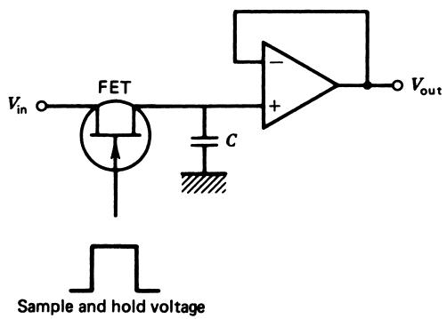
FET used as an electronic switch. Nonideal aspects:
Finite ON resistance of switch (\(R_{\text{ON}}\)) and source resistance \(R_s\):
- During sampling, forms RC low‑pass filter.
- Limit on frequency of input that can be tracked.
Model during sampling (Figure 23a):
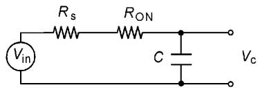
Figure 23a: Equivalent in sampling mode. Cutoff frequency:
\[ f_c = \frac{1}{2\pi (R_s + R_{\text{ON}}) C} \tag{21} \]
Finite OFF resistance and finite input resistance of buffer:
- During hold, capacitor slowly discharges → droop.
Model during hold (Figure 23b):
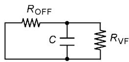
Figure 23b: Equivalent in hold mode. Equivalent resistance:
\[ R_{\text{eq}} = \frac{R_{\text{OFF}} R_{VF}}{R_{\text{OFF}} + R_{VF}} \]
Droop time constant:
\[ \tau_D = R_{\text{eq}} C \tag{22} \]
We must choose \(C\) such that droop during conversion doesn’t exceed 1 LSB according to Equation (18). This leads to:
\[ \frac{V_C}{\tau_D} \le \frac{V_R}{2^n \tau_c} \Rightarrow \tau_D \ge 2^n \tau_c \frac{V_C}{V_R} \tag{24} \]
Typically evaluate worst case \(V_C = V_R\).
Example 21: Choosing S/H Capacitor
Given:
- Unipolar 12‑bit ADC, \(τ_c = 30\ \mu\mathrm{s}\)
- S/H parameters: \(R_{\text{ON}} = 10\ \Omega\), \(R_{\text{OFF}} = 10\ \mathrm{M}\Omega\)
- Buffer input resistance \(R_{VF} = 10\ \mathrm{M}\Omega\)
- Source resistance \(R_s = 50\ \Omega\)
- Find minimum \(C\) from droop requirement.
Worst case \(V_C = V_R\). From Equation (24):
\[ \tau_D \ge 2^{12} \cdot 30\ \mu\mathrm{s} = 4096 \cdot 30 \times 10^{-6} = 0.12288\ \mathrm{s} \]
Now find \(C\) from Equation (22):
\[ \tau_D = \frac{R_{\text{OFF}} R_{VF}}{R_{\text{OFF}} + R_{VF}} C = \frac{(10^7)(10^7)}{10^7 + 10^7} C = 5 \times 10^6 C \]
Set \(\tau_D \ge 0.12288\ \mathrm{s}\):
\[ 5 \times 10^6 C \ge 0.12288 \Rightarrow C \ge 0.0246\ \mu\mathrm{F} \]
Choose \(C \approx 0.025\ \mu\mathrm{F}\).
- Sampling cutoff frequency (Equation 21):
\[ f_c = \frac{1}{2\pi (R_s + R_{\text{ON}}) C} = \frac{1}{2\pi (50 + 10)\cdot 0.025\times 10^{-6}} \approx 108\ \mathrm{kHz} \]
So the S/H can correctly track input frequencies up to ≈108 kHz in sample mode.
S/H Timing: Acquisition & Aperture
Important dynamic parameters:
- Acquisition time, \(\tau_{\text{acq}}\): time to charge \(C\) to within 1 LSB of new input when returning to sample mode. Limits how fast we can sample.
- Aperture time, \(\tau_{\text{ap}}\): delay between the “hold” command and the actual instant when input is isolated and held. Causes a timing error in effective sampling instant.
Total time between valid samples (throughput):
\[ T = \tau_c + \tau_{\text{acq}} + \tau_{\text{ap}} \tag{25} \]
Maximum sampling frequency:
\[ f_{\max} = \frac{1}{T} \]
Example
Given:
- \(\tau_{\text{ap}} = 50\ \mathrm{ns}\)
- \(\tau_{\text{acq}} = 4\ \mu\mathrm{s}\)
- ADC: \(\tau_c = 40\ \mu\mathrm{s}\)
Then:
\[ T = 40\ \mu\mathrm{s} + 4\ \mu\mathrm{s} + 0.05\ \mu\mathrm{s} = 44.05\ \mu\mathrm{s} \]
\[ f_{\max} \approx \frac{1}{44.05\ \mu\mathrm{s}} \approx 22.7\ \mathrm{kHz} \]
Microprocessor‑Compatible ADCs
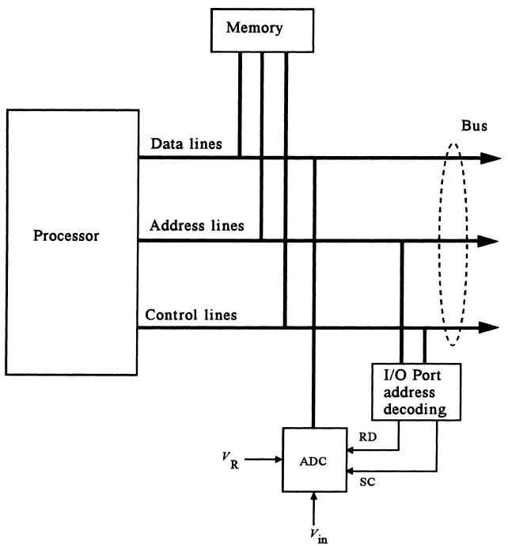
Modern ADCs commonly provide:
- Tri‑state digital outputs → connect directly to CPU data bus.
- Control lines mapped into I/O or memory address space.
- Microprocessor issues:
- Start‑convert by writing to control register/address.
- Polls or interrupts on EOC.
- Reads data via memory or I/O read.
Address decoder logic determines which addresses correspond to ADC controls/data.
3.4 Frequency‑Based Converters
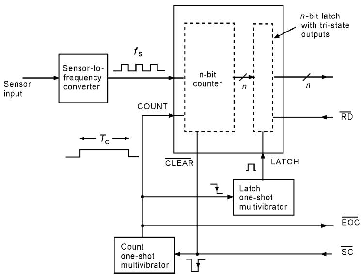
Another A/D strategy: convert sensor signal into frequency, then count pulses.
Components:
- Sensor → V‑to‑F converter: output square wave frequency \(f_s \propto\) sensor signal.
- Counter counts pulses over fixed time \(T_c\).
- One‑shot (monostable) sets \(T_c\) and then latches count; falling edge = EOC.
- Computer reads counter value as digital representation of analog input.
For \(n\)‑bit counter, to use full range at \(f_{\max}\):
\[ T_c = \frac{2^n - 1}{f_{\max}} \tag{26} \]
For intermediate frequency \(f\), count:
\[ N = f T_c \]
Example 23: 8‑bit Frequency‑Based ADC
Sensor: frequency varies from 2.0 to 20 kHz; use 8‑bit counter.
Max count: \(2^8 - 1 = 255\).
Design \(T_c\) so that \(f_{\max} = 20\) kHz → N = 255:
\[ T_c = \frac{255}{20,000} = 0.01275\ \mathrm{s} = 12.75\ \mathrm{ms} \]
At \(f_{\min} = 2.0\) kHz:
\[ N = f_{\min} T_c = 2000 \cdot 0.01275 = 25.5 \Rightarrow 25_{10} = 00011001_2 \]
So digital output ranges from about 25 to 255 over sensor’s frequency range.
Voltage‑to‑Frequency Conversion: LM331
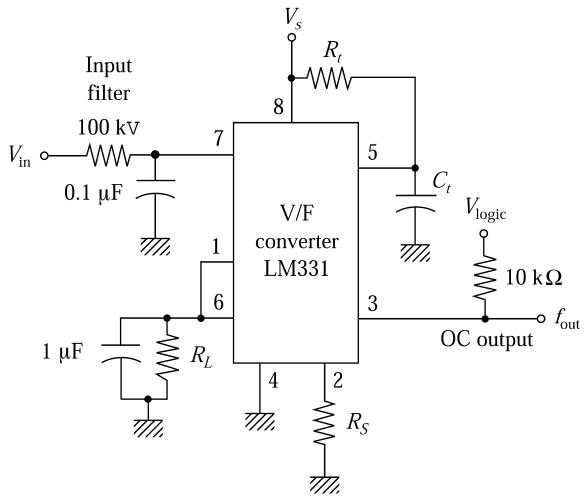
LM331 output frequency:
\[ f_{\text{out}} = \frac{R_S}{R_L} \frac{1}{R_t C_t} \frac{V_{\text{in}}}{2.09} \tag{27} \]
- \(R_S \approx 10\)–\(20\ \mathrm{k}\Omega\) (adjust scaling).
- \(R_L \approx 100\ \mathrm{k}\Omega\) (defines discharge path).
- \(R_t, C_t\) set nominal frequency range.
- Output is open‑collector → need pull‑up resistor.
Design example: 0–5 V input → ~0–10 kHz output.
Take \(R_S = 15\ \mathrm{k}\Omega\), \(R_L = 100\ \mathrm{k}\Omega\). For \(V_{\text{in,max}} = 5\ \mathrm{V}\), we want \(f_{\text{out}} = 10\) kHz:
\[ 10,000 = \frac{15k}{100k} \frac{1}{R_t C_t} \frac{5}{2.09} \Rightarrow R_t C_t \approx 3.59 \times 10^{-5}\ \mathrm{s} \]
Pick \(C_t = 0.01\ \mu\mathrm{F}\) → \(R_t \approx 3.6\ \mathrm{k}\Omega\).
555 Timer as Frequency Sensor Interface
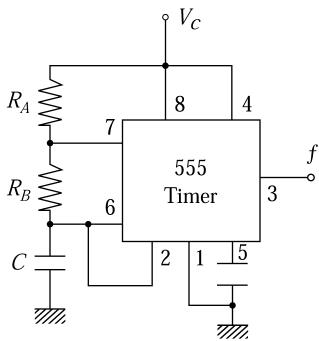
Standard astable frequency:
\[ f = \frac{1}{0.693 (R_A + 2 R_B) C} \tag{28} \]
If \(R_A\) or \(C\) is a sensor (e.g., light‑dependent resistor, capacitive level sensor), then frequency changes with the measured variable.
Use this frequency with the counter‑based ADC approach from Figure 25.
Example 24: Light‑Dependent Resistor to 10‑bit Frequency‑ADC
Sensor: \(R_A\) varies from 36 kΩ at 1.5 W/m² to 4 kΩ at 10 W/m².
Use 555 timer with:
- \(R_B = 2\ \mathrm{k}\Omega\)
- Choose \(C\) and count time \(T_c\) for 10‑bit counter (max 1023).
Let’s choose \(T_c = 10\ \mathrm{ms}\). Then:
Maximum frequency at \(R_A = 4\ \mathrm{k}\Omega\) should give N ≈ 1023:
\[ f_{\max} = \frac{1023}{T_c} = 102,300\ \mathrm{Hz} \]
From Equation (28):
\[ 102,300 = \frac{1}{0.693 (4k + 2R_B) C} \]
Pick \(R_B = 2\) kΩ, so \(R_A + 2R_B = 4k + 4k = 8k\Omega\):
\[ C \approx \frac{1}{0.693 \cdot 8k \cdot 102,300} \approx 0.00018\ \mu\mathrm{F} \]
At minimum light (1.5 W/m², \(R_A = 36\) kΩ):
\[ f_{\min} = \frac{1}{0.693 (36k + 4k) C} \approx 20,042\ \mathrm{Hz} \]
Count:
\[ N_{\min} = f_{\min} T_c \approx 200 \]
So digital output varies roughly from 200 to 1023 as light increases. The relationship is nonlinear because \(f \propto 1/(R_A + 2R_B)\).
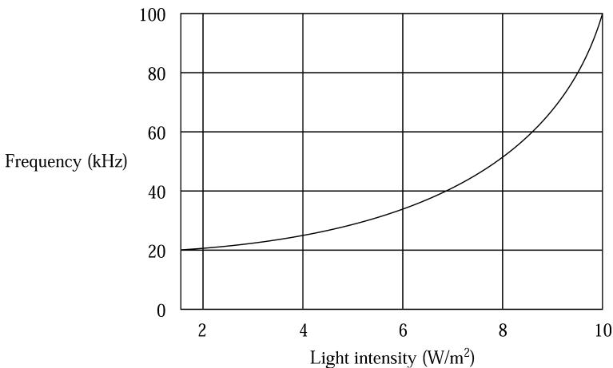
Summary / Key Points
- Comparators
- 1‑bit A/Ds that output high/low based on input vs reference.
- Used for alarms, zero‑crossing detection, and inside ADC/DACs.
- Noise near threshold causes chattering → fix with hysteresis (Schmitt triggers).
- Open‑collector outputs require pull‑ups and allow wired‑OR and level flexibility.
- DACs
- Unipolar: \(V_{\text{out}} = \frac{N}{2^n} V_R\).
- Bipolar (offset‑binary): \(V_{\text{out}} = \frac{N}{2^n} V_R - V_R/2\).
- Resolution: \(\Delta V = V_R 2^{-n}\) sets smallest output step.
- Implemented with R–2R ladders and op‑amps.
- ADCs
- Quantize input: \(N = \operatorname{INT}(\frac{V_{\text{in}}}{V_R} 2^n)\).
- Resolution/uncertainty same \(\Delta V = V_R 2^{-n}\).
- SAR ADC: fast, medium‑resolution, uses internal DAC + comparator.
- Dual‑slope ADC: slow but very accurate and stable; common in DMMs.
- Dynamic effects
- Converters need finite time to convert → input must be stable during that time.
- Input slew‑rate limit: \(\frac{dV_{\text{in}}}{dt} \le \frac{V_R}{2^n \tau_c}\).
- Sample‑and‑Hold circuits freeze input during conversion; design must consider droop, bandwidth, acquisition, and aperture times.
- Frequency‑based A/D
- Sensor → frequency → counter over fixed interval.
- Used with V‑to‑F converters (LM331) or 555 timer circuits.
- Typically slower; may be nonlinear but robust and simple in some applications.
Formula Summary
Comparators & Hysteresis
- Noise‑free switching: \[V_{\text{in}} \ge V_{\text{ref}} \Rightarrow \text{output high}\]
- Hysteresis comparator thresholds (generic form): \[V_H = V_{\text{ref}}\] \[V_L = V_{\text{ref}} - \frac{R}{R_f} V_0\]
- Hysteresis width: \[\Delta V = V_H - V_L = \frac{R}{R_f} V_0\]
DACs
Unipolar DAC output: \[ V_{\text{out}} = V_R \left( b_1 2^{-1} + \dots + b_n 2^{-n}\right) \tag{5} \] or \[ V_{\text{out}} = \frac{N}{2^n} V_R \tag{6} \]
Bipolar DAC (offset‑binary): \[ V_{\text{out}} = \frac{N}{2^n} V_R - \frac{1}{2} V_R \tag{7} \]
DAC / ADC resolution (LSB size): \[ \Delta V = V_R 2^{-n} \tag{8,10} \]
ADCs
Unipolar ADC inequality: \[ b_1 2^{-1} + \dots + b_n 2^{-n} \le \frac{V_{\text{in}}}{V_R} \tag{9} \]
Unipolar ADC code: \[ N = \operatorname{INT}\left(\frac{V_{\text{in}}}{V_R} 2^n\right) \tag{11} \]
Bipolar ADC (offset‑binary): \[ N = \operatorname{INT}\left[\left(\frac{V_{\text{in}}}{V_R} + \frac{1}{2}\right) 2^n\right] \tag{12} \]
Dual‑Slope ADC
Integrator output after input phase: \[ V_1 = \frac{T_1}{RC} V_x \tag{14} \]
Voltage during reference discharge: \[ V_2 = \frac{T_1}{RC} V_x - \frac{t_x}{RC} V_R \tag{16} \]
Relation between input and discharge time: \[ V_x = \frac{t_x}{T_1} V_R \tag{17} \]
Dynamic Constraints & S/H
Max allowed input slew during conversion: \[ \frac{dV_{\text{in}}}{dt} \le \frac{V_R}{2^n \tau_c} \tag{18} \]
For sinusoid \(V_{\text{in}} = V_0 \sin(\omega t)\): \[ \omega \le \frac{V_R}{2^n \tau_c V_0} \tag{19} \] \[ f \le \frac{V_R}{2^{n+1} \pi \tau_c V_0} \tag{20} \]
S/H sampling cutoff: \[ f_c = \frac{1}{2\pi (R_s + R_{\text{ON}}) C} \tag{21} \]
Droop time constant: \[ \tau_D = \frac{R_{\text{OFF}} R_{VF}}{R_{\text{OFF}} + R_{VF}} C \tag{22} \]
Droop constraint: \[ \tau_D \ge 2^n \tau_c \frac{V_C}{V_R} \tag{24} \]
Sampling throughput: \[ f_{\max} = \frac{1}{\tau_c + \tau_{\text{acq}} + \tau_{\text{ap}}} \tag{25} \]
Frequency‑Based Converters
Count time for \(n\)‑bit counter with max frequency \(f_{\max}\): \[ T_c = \frac{2^n - 1}{f_{\max}} \tag{26} \]
Count for arbitrary frequency \(f\): \[ N = f T_c \]
LM331 V‑to‑F converter (approx): \[ f_{\text{out}} = \frac{R_S}{R_L} \frac{1}{R_t C_t} \frac{V_{\text{in}}}{2.09} \tag{27} \]
555 timer astable frequency: \[ f = \frac{1}{0.693 (R_A + 2 R_B) C} \tag{28} \]
Interactive Deck
How Many Bits Do You Need? (DAC/ADC Resolution Explorer)
Use this interactive cell to explore how reference voltage and number of bits affect the LSB size (resolution) for DACs and ADCs using
\[\Delta V = V_R 2^{-n}\]
DAC Output Calculator (Unipolar)
Experiment with converting a digital code to an analog voltage using
\[V_{\text{out}} = \dfrac{N}{2^n} V_R\]
ADC Output Code Calculator (Unipolar)
Now convert analog voltage to digital code using
\[ N = \operatorname{INT}\left(\frac{V_{\text{in}}}{V_R} 2^n\right) \]
Bipolar DAC Explorer (Offset‑Binary)
Explore a bipolar DAC:
\[ V_{\text{out}} = \frac{N}{2^n} V_R - \frac{1}{2} V_R \]
Comparator with Hysteresis – Threshold Explorer
Use this cell to experiment with hysteresis width \(\Delta V\) for a comparator:
\[ \Delta V = \frac{R}{R_f} V_0 \]
Reactive Demo 1 – Interactive DAC Transfer (OJS + Pyodide + Plotly)
Use the sliders to control number of bits and reference voltage. The DAC transfer curve updates in real time.
Reactive Demo 2 – ADC Quantization of a Ramp Signal
Visualize how an ADC with given n and V_R quantizes a linearly increasing input.
Reactive Demo 3 – Successive Approximation (4‑bit)
Simulate the successive approximation process for a 4‑bit ADC with \(V_R = 5\ \mathrm{V}\), as in Example 17.
Reactive Demo 4 – Slew Rate Limit vs Conversion Time
Explore Equation (18):
\[ \frac{dV_{\text{in}}}{dt} \le \frac{V_R}{2^n \tau_c} \]
Reactive Demo 5 – Frequency‑Based ADC (Counter Method)
Explore the counter‑based A/D relationship for an \(n\)‑bit counter and a signal frequency \(f\).
Given
\[T_c = \frac{2^n - 1}{f_{\max}}, \quad N = f T_c\]